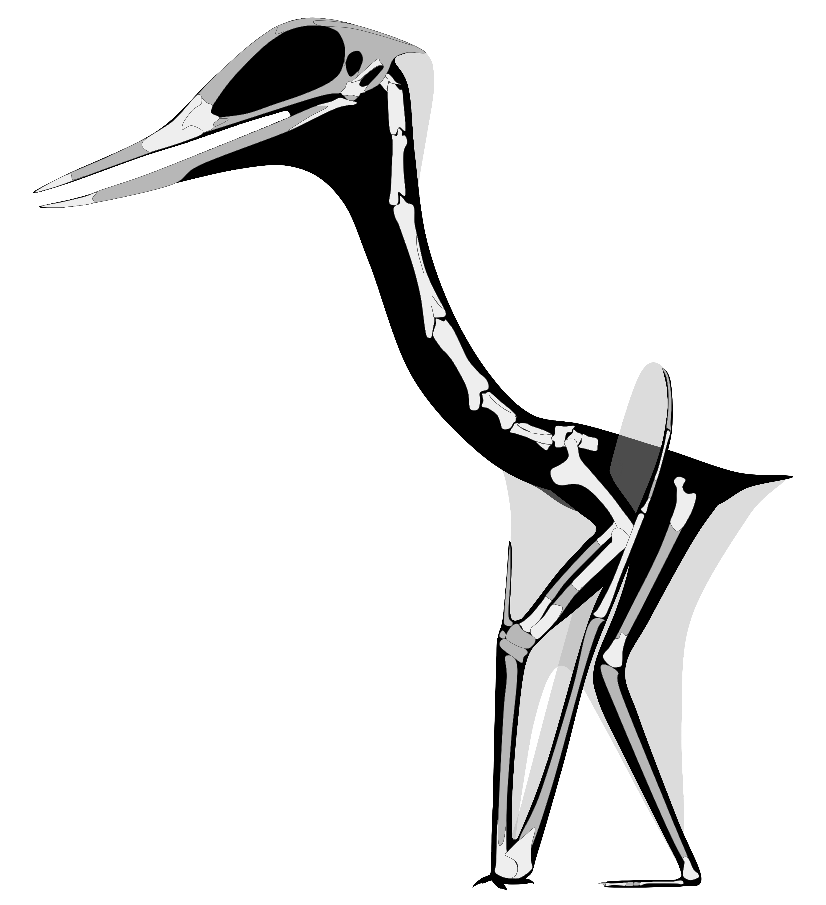
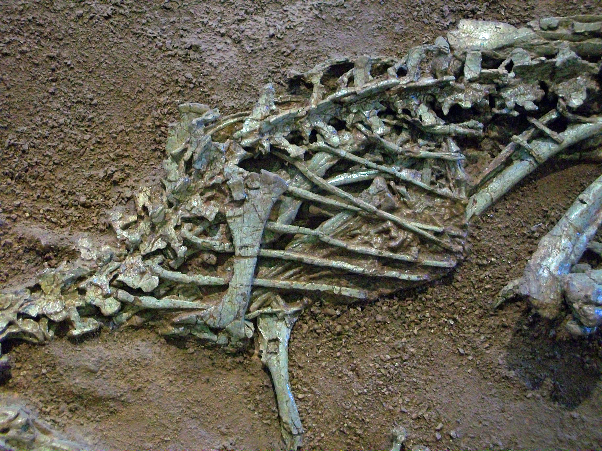

«Тасқа айналған әлем» каталогы
Фоссилизация (Тасқа айналу) процесі қалай жүреді?
1. Өлім
Жануар өліп, су түбіне немесе батпаққа батады. Жұмсақ тіндері ыдырайды.
2. Көмілу
Қаңқа шөгінді жыныстармен (құм, саз) жылдам жабылып, оттегісіз ортада қалады.
3. Минерализация
Сүйек қуыстарына минералды сулар сіңіп, органикалық заттар тасқа айналады.
4. Табылу
Жел, су эрозиясы немесе қазба жұмыстары арқылы фоссилия жер бетіне шығады.

Аралозавр (Aralosaurus tuberiferus)
1968 жылы Қызылорда облысы, Түлкілі (Қанқазған) шатқалынан табылған әйгілі гадрозавр (үйректұмсықты динозавр). Оның мұрнының үстінде ерекше сүйекті дөңесі болған. Ол дыбыс шығару немесе түр ішіндегі байланыс үшін қолданылуы мүмкін.
- Кезеңі: Соңғы бор (Сант-Кампан)
- Ұзындығы: ~6.5 - 8 метр
- Қорегі: Қылқанжапырақтылар мен бұталар

Аждархо (Azhdarcho lancicollis)
Орталық Азиядан табылған ең танымал птерозаврлардың бірі. Оның атауы өзбек мифологиясындағы айдаһар «Аждарходан» шыққан. Олардың мойын омыртқалары өте ұзын болған. Сырдария жағалауларынан сүйек сынықтары табылған.
- Кезеңі: Соңғы бор (Тұрон-Сант)
- Қанат құлашы: ~3 - 4.5 метр
- Ерекшелігі: Сүйектері қуыс және өте жеңіл

Дромеозаврлар (Dromaeosauridae / Бостөбе түзілімі)
Солтүстік-Шығыс Арал маңы (Қызылорда облысы, Шах-Шах, Бостөбе) бор шөгінділерінен табылған шапшаң жүйрік, ұсақ жыртқыш динозаврлар тобы. Заманауи палеонтологиялық деректер бойынша дромеозаврлар құстарға ең жақын туыс болып саналады және олардың денесі қауырсынмен қапталған.
- Кезеңі: Жоғарғы бор (Сантон–Кампан)
- Өлшемі: Ұзындығы ~1.5 - 3 метр, биіктігі 1 метрге дейін
- Дереккөз: Аверьянов А.О., Лопатин А.В. (2022 ж.) зерттеулері

Ежелгі қолтырауындар (Kansajsuchus және т.б.)
Бор кезеңіндегі Сырдария өңірі кең өзен жүйелері мен батпақтарға толы болды. Бұл орта алып крокодилморфтар үшін мінсіз мекен болған. Олардың өткір тістері мен қалың мүйізді сауыттарының (остеодерма) бөлшектері Бостөбе формациясында жиі кездеседі. Олар су жағасына келген динозаврларға шабуыл жасаған болуы мүмкін.


Палеонтологиялық музей залынан көрініс
Зерттеу барысында облыстық музей экспозициясы мен Аралозавр қаңқасы жан-жақты зерделенді

Аралозавр қаңқасы жанында
Жоба авторы Базарова Арай және жетекшісі Салтанат Оспанова

Аралозавр (Aralosaurus)
Соңғы бор дәуірінің гадрозавриді (Түлкілі / Қанқазған)

Қазба жануарлар мен өсімдіктер
Шах-Шах, Түлкілі экспедициялары және ҒА зерттеулері